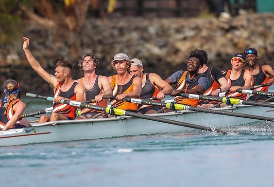
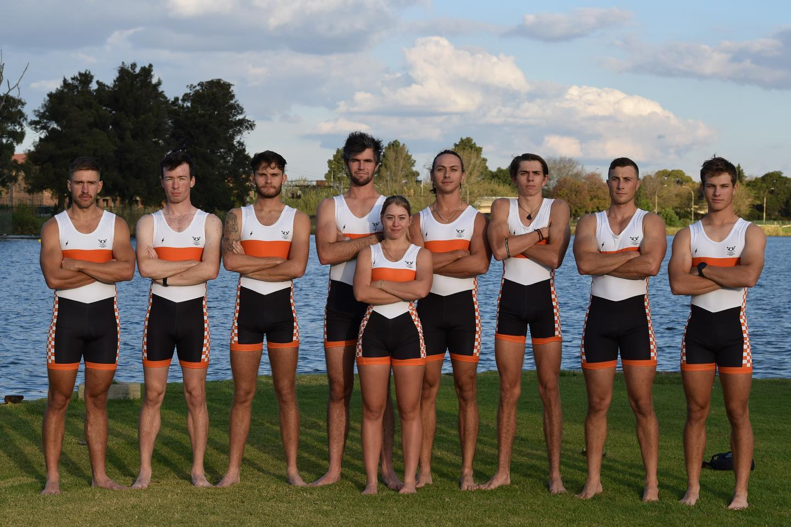

Regattas

USSAR-SPRINTS

RMB BOAT RACE

Welcome to the University of Johannesburg' rowing club. Noob noob noob nobiiooo
Visit Us To Know MoreUJ Rowing Club was established in 2005 and aims to provide student-rowers with the best opportunities to unlock their potential of becoming national and world-class rowers. The Club has a well-established record of producing rowers that continue from University into representing Senior National Rowing Teams.
Rowing at the University of Johannesburg (UJ) is not merely a sport; it is a dynamic community where dedication, teamwork, and passion converge on the tranquil waters. UJ Rowing stands as a symbol of excellence, fostering an environment that encourages both physical fitness and personal growth. With a backdrop of picturesque landscapes and a commitment to fostering athletic prowess, the rowing club at UJ provides students with a unique opportunity to develop resilience and camaraderie. Whether gliding smoothly on the water or pushing boundaries on the ergometer, UJ Rowing cultivates a spirit of determination and collaboration, creating lasting memories and friendships for those who embrace the oars. As part of this vibrant community, rowers at the University of Johannesburg embark on a journey that goes beyond competition, embracing the challenge of navigating both the currents of the water and the currents of personal achievement..
Training at the University of Johannesburg (UJ) Rowing program is an immersive experience centered around the picturesque Victoria Lake Club in Germiston. The training regimen reflects a commitment to fostering athletic excellence and personal development. Against the serene backdrop of Victoria Lake, rowers engage in structured and rigorous training sessions that encompass both on-water practices and land-based exercises. Coaches work tirelessly to tailor training programs, ensuring that athletes of all levels can push their boundaries and refine their rowing techniques. Victoria Lake Club provides an ideal setting for UJ Rowing's training, offering expansive waterways that allow rowers to develop strength, endurance, and teamwork. The club's facilities, coupled with state-of-the-art equipment, create an environment conducive to honing the skills necessary for success in rowing competitions. Training sessions not only focus on physical conditioning but also emphasize mental resilience and strategic thinking. Athletes are encouraged to embrace challenges, fostering a sense of camaraderie that extends beyond the water. The commitment to holistic development makes UJ Rowing's training program a transformative journey for each participant, instilling a passion for the sport and a dedication to personal growth. Victoria Lake Club stands as more than a training ground; it is a vibrant hub where UJ rowers forge lasting memories and build the foundation for success both in and out of the water.
The coaching staff at the University of Johannesburg (UJ) Rowing program is distinguished by its commitment to excellence, and among its esteemed coaches is Sizwe Ndlovu, an Olympic gold medalist from the London 2012 Games. With a profound understanding of the sport and a remarkable personal journey, Coach Ndlovu brings unparalleled insight and inspiration to UJ Rowing. His gold medal achievement not only exemplifies his dedication to rowing but also serves as a beacon for aspiring athletes under his guidance. The coaching team at UJ embodies a collaborative spirit, fostering a supportive environment for rowers to hone their skills and reach new heights. Their mentorship extends beyond the technical aspects of rowing, instilling values of discipline, resilience, and sportsmanship. As leaders, they cultivate a culture of continuous improvement, ensuring that every member of the UJ Rowing family has the opportunity to excel both on the water and in their personal development journey. With coaches like Sizwe Ndlovu at the helm, UJ Rowing stands as a beacon of athletic achievement and mentorship within the university community.